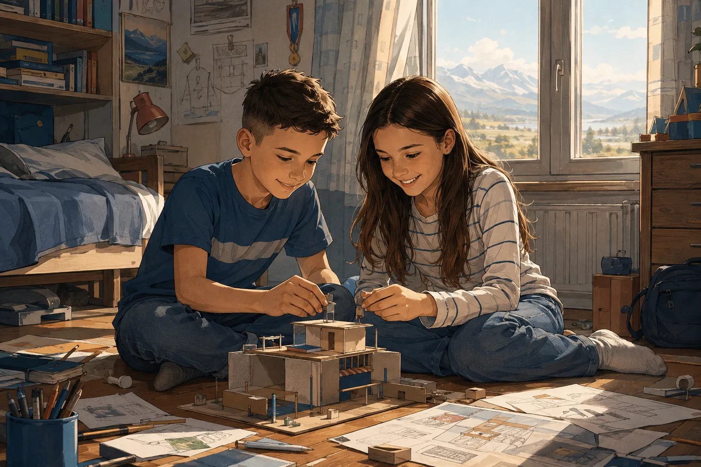
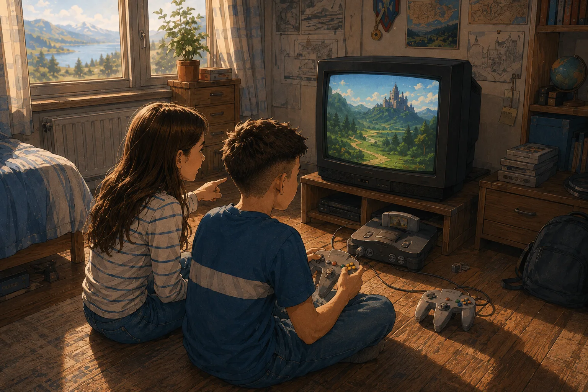
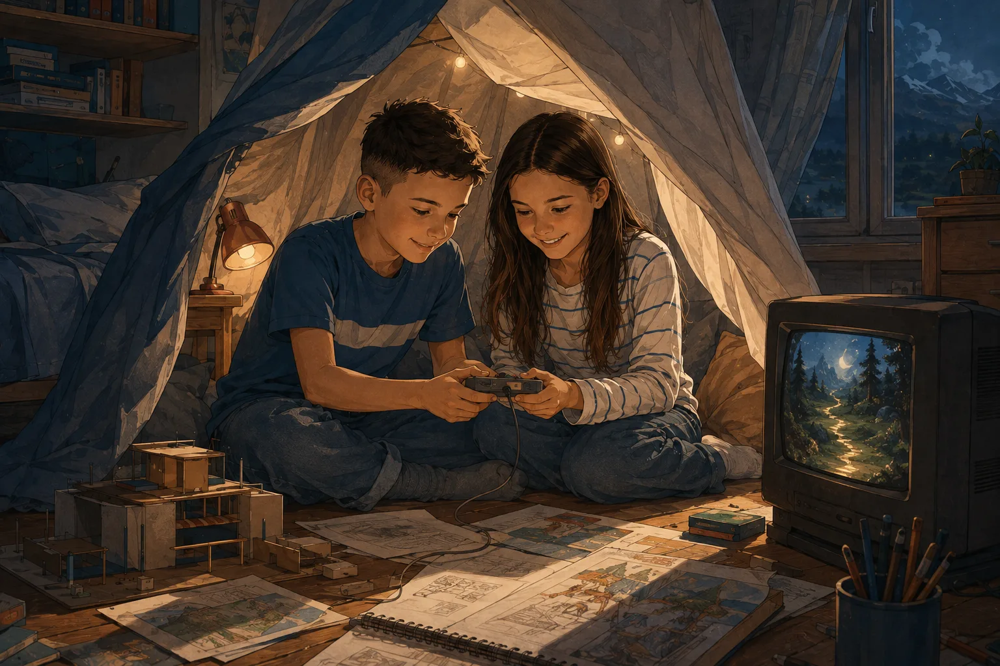
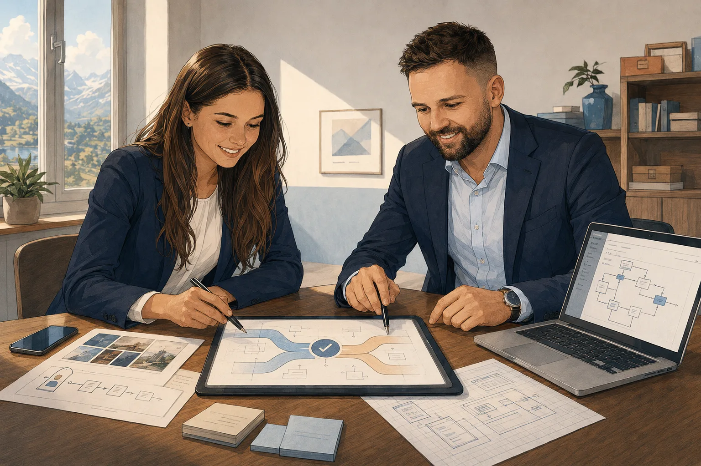

Unsere Geschichte
Player Two, das sind wir: Kristina und Kristian. Blättern Sie durch — Bild für Bild, vom Kinderzimmer bis heute.

Player Two, das sind wir: Kristina und Kristian – Geschwister, die schon als Kinder alles gemeinsam gemacht und vom eigenen Weg geträumt haben.

Aufgewachsen mit Nintendo, hat uns vor allem ein Spiel geprägt: The Legend of Zelda – Ocarina of Time. Mut, Fairness und Rücksicht auf andere – und ganz nebenbei das Teilen: Wir haben uns an der Konsole abgewechselt, lange bevor wir wussten, was Teamwork bedeutet.

Für uns war das mehr als Zeitvertreib – es war unser Rückzugsort, ein Ort, an dem wir kreativ sein und für eine Weile alles um uns herum vergessen konnten.
Genau diese Erfahrung steckt bis heute in uns – und im Namen Player Two. Denn das ist unser Ansatz: Sie sind Player One in Ihrem Unternehmen. Wir sind Ihr Player Two – an Ihrer Seite, damit Sie das Spiel nicht allein bestreiten müssen.

Wir kennen den KMU-Alltag aber auch aus eigener beruflicher Erfahrung. Kristina bringt langjährige Erfahrung aus Verkauf, Kundenberatung und Marketing mit, Kristian die technische Tiefe aus Prozessanalyse, Softwareentwicklung und KI. Zwei Perspektiven, ein Ziel: Ihnen die Arbeit abnehmen, die Sie von Ihrem eigentlichen Geschäft abhält.